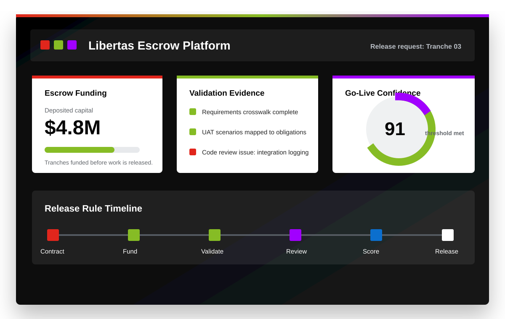

Stop paying ahead of usable value.
Move away from hour-heavy and vague milestone billing. Fund the project, govern the release, and know exactly what was validated before payment moves.
Client benefitsIndependent escrow agency for technology delivery
You trust your real-estate purchases with escrow. Libertas brings that same independent governance to high-stakes technology projects, so capital, obligations, acceptance evidence, and release rules are all aligned before the work begins.

A neutral operating layer for the client, the vendor, and the release decision.
Technology delivery should be governed like a transaction that matters.
A new category
Libertas sits between the funding decision and the release decision. Clients deposit capital in project tranches. Vendors request release through the platform. Libertas validates whether the contract obligations, requirements, UAT evidence, code quality, and go-live readiness support the release.
Move away from hour-heavy and vague milestone billing. Fund the project, govern the release, and know exactly what was validated before payment moves.
Client benefitsFulfill the contract, package the evidence, and request release under rules that were agreed in advance. No more waiting on subjective interpretation.
Vendor benefitsLibertas does not manage the project for either side. It validates the evidence, scores readiness, and documents the path to release, hold, override, or dispute.
Process detailsWhy it matters
Operating model
The client can release funds at any time. Libertas does not remove commercial control. It gives both sides a rigorous, documented view of whether the delivery evidence supports the release.
Libertas charges a fee on the total escrow account, similar in spirit to a title company in a real-estate transaction. It does not invest escrow funds or retain interest from the escrow account.
From funding to release
Escrow terms, parties, tranches, and release rules are written into the agreement.
Client deposits capital in defined tranches for the project.
Requirements are mapped to obligations and delivery evidence.
UAT, technical design, code, integrations, and risk items are checked.
Go-live confidence is calculated against agreed thresholds.
The vendor requests release with the complete evidence package.
Funds are released, held, disputed, or overridden by the client with visibility.
Global ambition
ERP, CRM, AI, data, cloud, and custom software programs carry transaction-level risk. Libertas gives those projects an institutional release mechanism.